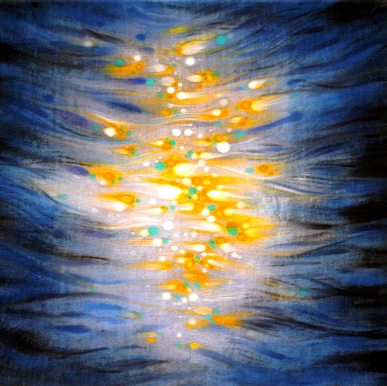
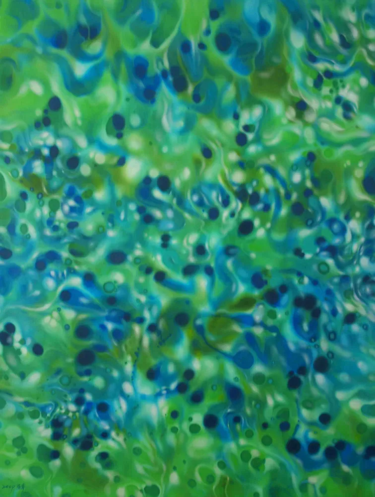
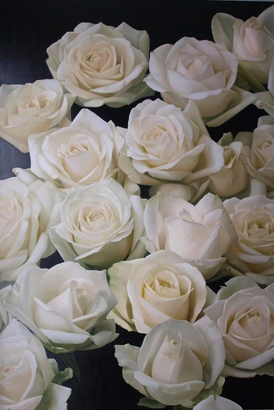

Collection
Collections partielles
Établi d'après les mentions de collection et les archives de ventes aux enchères figurant dans les documents sur les œuvres, classé par série ; les collectionneurs ne sont indiqués que par leur secteur d'activité, sans nom.
Historique des enchères
 Lys magenta 2012Poly Auction Hong Kong, 2020Lot 145
Lys magenta 2012Poly Auction Hong Kong, 2020Lot 145
Estimation HKD 500,000–750,000
Prix réalisé HKD 590,000 En marchant n° 36 2009Poly Auction Hong Kong, 2020Lot 146
En marchant n° 36 2009Poly Auction Hong Kong, 2020Lot 146
Estimation HKD 200,000–250,000
Prix réalisé HKD 236,000
Réalisme (Zhi Xiang)
 Colline des acacias 2005Collectionneurs du secteur manufacturier
Colline des acacias 2005Collectionneurs du secteur manufacturier Bananier 2011Collectionneurs du milieu médical
Bananier 2011Collectionneurs du milieu médical Bananeraie 2014Collectionneur du secteur technologique
Bananeraie 2014Collectionneur du secteur technologique
En marchant
 En marchant n° 28 2009Collectionneurs du milieu médical
En marchant n° 28 2009Collectionneurs du milieu médical En marchant n° 26 2009Collectionneurs du milieu juridique
En marchant n° 26 2009Collectionneurs du milieu juridique En marchant n° 1 2009Collectionneur du secteur de la construction
En marchant n° 1 2009Collectionneur du secteur de la construction En marchant n° 5 2009Collectionneur du secteur de la construction
En marchant n° 5 2009Collectionneur du secteur de la construction En marchant n° 13 2009Collectionneur du secteur de la construction
En marchant n° 13 2009Collectionneur du secteur de la construction En marchant n° 14 2009Collectionneur du secteur de la construction
En marchant n° 14 2009Collectionneur du secteur de la construction
En marchant n° 17 2009Collectionneur du secteur de la construction
Nuage, montagne, eau
 Nuage 2010Collection de musée
Nuage 2010Collection de musée Montagne 2010Collection de musée
Montagne 2010Collection de musée
Eau 2010Collection de musée
Fleur — forme et couleur
 Roses blanches-1 2011Collectionneur du secteur sidérurgique
Roses blanches-1 2011Collectionneur du secteur sidérurgique
Rose blanche-2 2011Collectionneur du secteur alimentaire Roses rose orangé-1 2011Collectionneurs du monde du spectacle
Roses rose orangé-1 2011Collectionneurs du monde du spectacle Lys orientaux 2011Collectionneurs du milieu juridique
Lys orientaux 2011Collectionneurs du milieu juridique Lys jaunes-2 2012Collectionneurs du secteur des objets d'art
Lys jaunes-2 2012Collectionneurs du secteur des objets d'art
Splendeur millénaire
 Splendeur millénaire-1 2012Collectionneur du secteur de l'aménagement foncier
Splendeur millénaire-1 2012Collectionneur du secteur de l'aménagement foncier Splendeur millénaire-3 2012Collectionneurs du secteur manufacturier
Splendeur millénaire-3 2012Collectionneurs du secteur manufacturier Splendeur millénaire-4 2012Collectionneur du secteur de l'aménagement foncier
Splendeur millénaire-4 2012Collectionneur du secteur de l'aménagement foncier
Guang Bian
 Guang Bian n° 21 2018Collectionneurs du secteur des objets d'art
Guang Bian n° 21 2018Collectionneurs du secteur des objets d'art Guang Bian n° 24 2017–2018Collectionneur issu de l’industrie traditionnelle
Guang Bian n° 24 2017–2018Collectionneur issu de l’industrie traditionnelle